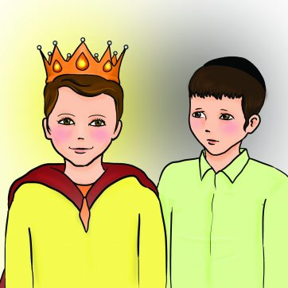

סיפור לשבת
פרשת וישב | מידת קנאה
יעקב אבינו אהב את כל בניו ובנותיו, אבל את יוסף שהיה יתום מאמו – אהב במיוחד. הוא תפר לו כתונת פסים של משי. שאר האחים קנאו ביוסף, וכאשר מקנאים במישהו בדרך כלל מגיעה גם שנאה. יוסף היה חולם חלומות בהם ראה שאחיו משתחווים לו והוא מושל עליהם. כשסיפר זאת לאחיו גרם להם לשנוא אותו יותר. כאן חשוב להדגיש שאחי יוסף – הלוא הם ראשי השבטים הקדושים של עם ישראל, ובודאי לא עשו זאת ממידות רעות ומושחתות, אלא חשבו שיוסף מתנשא שלא בצדק ומתנהג שלא כדין, ורצו לחנך אותו. פעם שלח יעקב את יוסף לדרוש בשלום האחים שיצאו לשדה. כשראו אותו קראו: “הנה בעל החלומות הלזה”. אחד מהם הציע להרוג אותו. אך ראובן שהיה הבכור, לקח אחריות והציע שבמקום להרוג – יזרקו אותו לאחד הבורות הוא תכנן לבוא בלילה ולהוציאו משם. הפשיטו האחים את כתונת הפסים מיוסף וזרקו אותו לבור מלא בנחשים ועקרבים. אך אפילו הם, הרמשים, חשו בצדקותו לא הזיקו לו. לאחר מכן חזר ראובן לבית. באותו זמן עברה שיירת מדיינים במקום וראתה בור שאליו התקבצו עופות רבים. הם הבינו שבתוכו נמצא משהו מיוחד, ומצאו נער יפה תואר. הם הוציאו אותו והתכוונו לקחתו איתם. האחים דרשו מהם להחזירו, אך המדיינים סרבו. לבסוף הגיעו לפשרה: מכירת יוסף תמורת כסף. דרך רצופת תלאות, אך רצופת ניסים עברה על יוסף עד שהגיע למצרים ועלה לגדולה ולישועת עם ישראל כשגלו למצרים. כשגילה ראובן שאחיו מכרו את יוסף קרע את בגדיו ואמר: “הנער איננו ואנה אני בא"? גם האחים פחדו מאביהם, לכן שחטו שעיר עיזים וטבלו את כתונת יוסף בדמו. כך הגיעו ליעקב וסיפרו לו את הבשורה. יעקוב הצטער נורא! הוא בכה, התאבל וסרב להתנחם עוד ימים רבים. ילדים יקרים, ראו למה גורמת הקנאה. לכמה צער וסבל. קנאה היא מידה קשה ומגונה. וברגע שחשים מעט ממנה, צריך לעבוד קשה כדי לסלקה לחלוטין!

להדפסת הסיפור